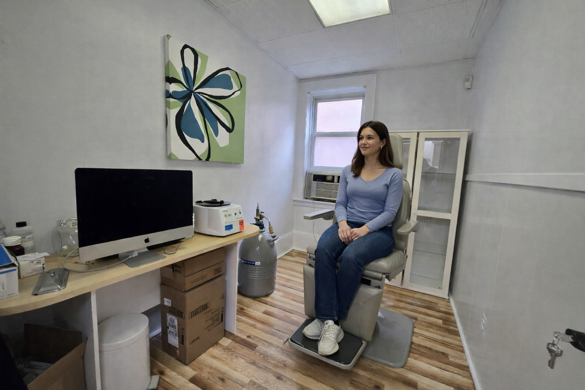

Advanced Medical Dermatology in New York
Board-Certified Dermatologist
Expert Dermatology Care You Can Trust
43+ years of trusted dermatology care.
Trusted Expertise
43+
Years
4
Languages
Top Doctor
2005-2009
Board-certified, multilingual, and known for clear patient-centered care.
Board Certified
Multilingual Care
Clinic Gallery
Real photos from the Astoria dermatology office
See the office exterior, exam rooms, and practice details patients look for before choosing a dermatologist in Astoria.


Why Patients Choose This Practice
High-touch care with the standards of a leading private clinic
Board-Certified Expertise
Evidence-based dermatology care grounded in decades of clinical experience and detailed evaluation.
Compassionate Explanations
Every visit is built around clear communication so patients understand their condition and next steps.
Modern Equipment
Contemporary diagnostic tools and treatment planning support precise care for common and complex concerns.
Patient-Focused Access
Convenient booking, responsive follow-up, and a professional environment designed to reduce stress.
Clinical Excellence
Dermatology that balances precision, comfort, and long-term skin health
Dr. Michael Gladstein, MD delivers comprehensive care for acne, psoriasis, suspicious lesions, painful cysts, and everyday skin concerns. Patients in Astoria and nearby Queens neighborhoods visit for treatment plans tailored to their symptoms, medical history, and long-term skin goals.
Thorough full-skin evaluations
Screenings for early detection
Personalized follow-up plans
Simple, patient-friendly education

Elevated Experience
A premium dermatology experience designed to feel calm, private, and exceptionally professional
From the first phone call to your in-office visit, the practice is positioned to feel polished and attentive. Patients are met with thoughtful communication, efficient workflow, and the confidence that comes from seeing a seasoned specialist.
Detailed consultations
Refined clinic setting
Clear treatment planning
Personal follow-up guidance

.jpeg)

Services Preview
Focused solutions for the skin concerns patients ask about most

Acne Treatment
Targeted plans for breakouts, scarring risk, and inflammation across teenage and adult skin.

Skin Cancer Screening
Careful skin checks and lesion assessment focused on early recognition and peace of mind.

Psoriasis Care
Long-term management strategies to reduce flare intensity and improve skin comfort.

Cysts & Abscess Treatment
Prompt evaluation and treatment planning for painful or recurrent skin growths and infections.
Dermatology Blog
Helpful skin guidance Astoria patients can read before they call
How to Choose the Best Dermatologist in Astoria
Learn what local patients should look for when comparing experience, communication, and treatment scope.
Read GuideWhen to Schedule a Skin Cancer Screening in Astoria
Know the signs, risk factors, and timing that make a professional skin check worth scheduling sooner.
Read GuideAdult Acne Treatment in Astoria: What to Expect
See how a dermatologist can build an acne plan around inflammation, sensitivity, and scarring risk.
Read GuidePatient Priorities
What patients typically want from a trusted dermatologist in Astoria
Strong local medical brands usually earn trust through clear explanations, thorough exams, organized visits, and follow-up that feels practical rather than rushed.
★★★★★
Clear communication helps patients feel comfortable when treatment options, expected results, and next steps are explained in plain language.
Communication★★★★★
A calm, well-organized visit experience matters for patients booking skin checks, acne visits, and long-term dermatology follow-up.
Office Experience★★★★★
Thorough exams and tailored recommendations are the signals patients look for when choosing a dermatologist in Astoria, Queens.
Clinical ThoroughnessFAQ
Common skin concerns, answered clearly
When should I schedule a skin cancer screening?
A screening is recommended if you notice a changing lesion, have a personal or family history of skin cancer, or simply want a preventive full-skin examination.
Can adult acne be treated effectively?
Yes. Adult acne often responds well to individualized treatment plans that address inflammation, hormones, skin sensitivity, and scarring risk.
What happens during a first dermatology visit?
The first visit typically includes a review of your concerns, medical history, skin examination, and a discussion of recommended next steps and treatment options.
Do you offer ongoing management for chronic conditions?
Yes. Chronic skin conditions such as psoriasis and recurrent cysts benefit from monitoring, adjustment of treatment, and long-term skin health planning.
Schedule With Confidence
Professional dermatology care with a patient-first approach
Call the clinic to reserve a consultation, discuss your skin concerns, and begin a treatment plan that fits your needs.